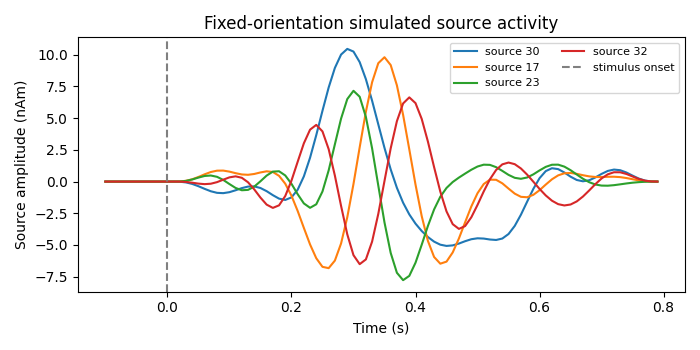
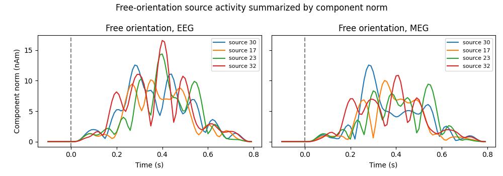

Note
Go to the end to download the full example code.
02. Source Simulation#
This tutorial mainly explains the SourceSimulator class. It demonstrates
CaliBrain source-level simulation under several configurations. It creates
sparse ERP-like source time courses for fixed orientation, free-orientation
EEG, and free-orientation MEG, then visualizes the active sources.
Source simulation is the first numerical step in the CaliBrain workflow. Later tutorials project these source signals through a leadfield to create sensor-level data.
Scientific motivation#
In simulation-based calibration experiments, the true source activity is
known. This allows CaliBrain to compare inverse estimates and uncertainty
intervals against ground truth. The source simulator creates sparse
event-related potential (ERP)-like signals: only nnz source locations are
active, while the remaining locations are exactly zero.
Units#
CaliBrain source amplitudes are dipole moments. Internally,
SourceSimulator labels the output as ampere meter with nano scaling:
simulator.units == FIFF.FIFF_UNIT_AM;simulator.unitmult == FIFF.FIFF_UNITM_N.
Numerically, the simulated values are expressed in nAm. The
amplitude_distribution therefore controls peak dipole moments in nAm.
import matplotlib.pyplot as plt
import numpy as np
from mne.io.constants import FIFF
from calibrain import SourceSimulator
RANDOM_SEED = 13
Configure ERP-like source waveforms#
SourceSimulator uses an ERP configuration to define the time axis,
stimulus onset, bandpass range, amplitude distribution, and timing behavior.
The key parameters are:
tmin/tmax: epoch start and end in seconds;stim_onset: stimulus time in seconds;sfreq: sampling frequency in Hz;fmin/fmax: bandpass range used to shape the ERP waveform;amplitude_distribution: log-normal peak amplitude distribution in nAm;random_erp_timing: whether ERP duration/onset varies across sources;erp_min_length: minimum ERP segment length in samples.
base_erp_config = {
"tmin": -0.1,
"tmax": 0.8,
"stim_onset": 0.0,
"sfreq": 100,
"fmin": 2,
"fmax": 8,
"amplitude_distribution": {
"median": 10.0,
"sigma": 0.15,
"clip": [2.0, 25.0],
},
"random_erp_timing": False,
"erp_min_length": 20,
}
simulator = SourceSimulator(ERP_config=base_erp_config)
times = np.arange(
base_erp_config["tmin"],
base_erp_config["tmax"],
1.0 / base_erp_config["sfreq"],
)
print("source unit:", simulator.units)
print("source unit multiplier:", simulator.unitmult)
source unit: 202 (FIFF_UNIT_AM)
source unit multiplier: -9 (FIFF_UNITM_N)
Define source-space configurations#
n_sources is the number of candidate source locations. nnz is the
number of non-zero locations. orientation_type controls the output shape:
fixed orientation: one scalar coefficient per source;
free EEG orientation: three local components per source;
free MEG orientation: two local components per source.
The MEG free-orientation reduction reflects that magnetometer/gradiometer leadfields are represented in the two-dimensional MEG-sensitive subspace.
source_configs = {
"fixed": {
"n_sources": 40,
"nnz": 4,
"orientation_type": "fixed",
"coil_type": None,
"seed": RANDOM_SEED,
},
"free_eeg": {
"n_sources": 40,
"nnz": 4,
"orientation_type": "free",
"coil_type": FIFF.FIFFV_COIL_EEG,
"seed": RANDOM_SEED,
},
"free_meg": {
"n_sources": 40,
"nnz": 4,
"orientation_type": "free",
"coil_type": FIFF.FIFFV_COIL_VV_MAG_T1,
"seed": RANDOM_SEED,
},
}
x_fixed, active_fixed = simulator.simulate(
n_sources=source_configs["fixed"]["n_sources"],
nnz=source_configs["fixed"]["nnz"],
orientation_type=source_configs["fixed"]["orientation_type"],
seed=source_configs["fixed"]["seed"],
)
print(f"{'fixed':>11} shape: {x_fixed.shape}; active sources: {active_fixed}")
x_free_eeg, active_free_eeg = simulator.simulate(
n_sources=source_configs["free_eeg"]["n_sources"],
nnz=source_configs["free_eeg"]["nnz"],
orientation_type=source_configs["free_eeg"]["orientation_type"],
coil_type=source_configs["free_eeg"]["coil_type"],
seed=source_configs["free_eeg"]["seed"],
)
print(f"{'free_eeg':>11} shape: {x_free_eeg.shape}; active sources: {active_free_eeg}")
x_free_meg, active_free_meg = simulator.simulate(
n_sources=source_configs["free_meg"]["n_sources"],
nnz=source_configs["free_meg"]["nnz"],
orientation_type=source_configs["free_meg"]["orientation_type"],
coil_type=source_configs["free_meg"]["coil_type"],
seed=source_configs["free_meg"]["seed"],
)
print(f"{'free_meg':>11} shape: {x_free_meg.shape}; active sources: {active_free_meg}")
fixed shape: (40, 90); active sources: [30 17 23 32]
free_eeg shape: (40, 3, 90); active sources: [30 17 23 32]
free_meg shape: (40, 2, 90); active sources: [30 17 23 32]
Fixed-orientation example#
Fixed orientation represents each source location with one scalar time course.
The returned source matrix has shape (n_sources, n_times).
fig, ax = plt.subplots(figsize=(7, 3.5))
for src_idx in active_fixed:
ax.plot(times, x_fixed[src_idx], label=f"source {src_idx}")
ax.axvline(
base_erp_config["stim_onset"],
color="0.5",
linestyle="--",
label="stimulus onset",
)
ax.set(
xlabel="Time (s)",
ylabel="Source amplitude (nAm)",
title="Fixed-orientation simulated source activity",
)
ax.legend(loc="upper right", ncols=2, fontsize=8)
fig.tight_layout()

EEG and MEG free-orientation examples#
Free orientation represents each source location with multiple local components. For EEG, CaliBrain uses three components. For MEG magnetometers or gradiometers, it uses two components in the MEG-sensitive subspace.
For free orientation, plotting every component can be visually crowded. A compact summary is the Euclidean norm across orientation components for each active source.
free_eeg_norm = np.linalg.norm(x_free_eeg, axis=1)
free_meg_norm = np.linalg.norm(x_free_meg, axis=1)
fig, axes = plt.subplots(1, 2, figsize=(10, 3.5), sharex=True, sharey=True)
for src_idx in active_free_eeg:
axes[0].plot(times, free_eeg_norm[src_idx], label=f"source {src_idx}")
axes[0].set_title("Free orientation, EEG")
axes[0].set_xlabel("Time (s)")
axes[0].set_ylabel("Component norm (nAm)")
axes[0].axvline(base_erp_config["stim_onset"], color="0.5", linestyle="--")
for src_idx in active_free_meg:
axes[1].plot(times, free_meg_norm[src_idx], label=f"source {src_idx}")
axes[1].set_title("Free orientation, MEG")
axes[1].set_xlabel("Time (s)")
axes[1].axvline(base_erp_config["stim_onset"], color="0.5", linestyle="--")
for ax in axes:
ax.legend(loc="upper right", fontsize=8)
fig.suptitle("Free-orientation source activity summarized by component norm")
fig.tight_layout()

What this stage produces#
Source simulation returns arrays and active-source indices:
fixed orientation:
xwith shape(n_sources, n_times), in nAm;free EEG orientation:
xwith shape(n_sources, 3, n_times), in nAm per local component;free MEG orientation:
xwith shape(n_sources, 2, n_times), in nAm per retained MEG-sensitive component.
The next step is leadfield generation/loading, followed by sensor simulation.
Total running time of the script: (0 minutes 0.338 seconds)